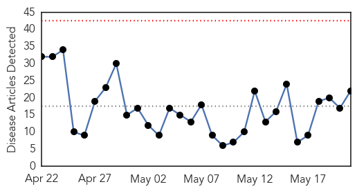
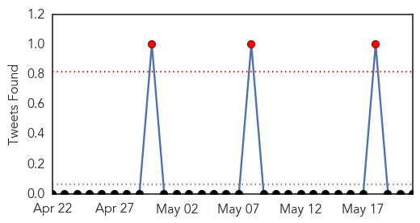
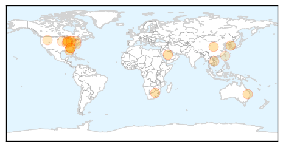
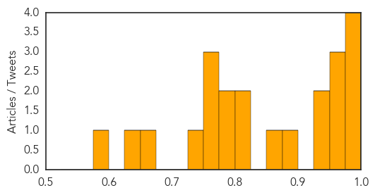

Toggle navigation
Early Warning
Daily Alerts
Influenza
May 21, 2015
Compare to:
-
Dengue Fever
Hemmorhagic Fever
Mold/Fungal Infection
Meningitis
Pertussis / Whooping Cough
Middle East Respiratory Syndrome
Cholera
Hepatitis
Chikungunya
Yellow Fever
Bubonic Plague
West Nile Virus
Swine Flu
Ebola
Measles
Unknown
Mumps
30 Day Trends
Web: 0
alerts
, 0
warnings
Twitter: 0
alerts
, 0
warnings
Top Articles:
0.996
S. Korea confirms third MERS case; 64 being monitored
0.995
Two cases of norovirus reported in Indian River County
0.995
Korea confirms third MERS case, 64 on watch
0.989
Vaccines developed for H5N1, H7N9 avian influenza strains
0.962
First Case Of New Dog Flu Confirmed In Metro Atlanta
0.959
Dog flu H3N2 spreads beyond the Midwest facts dog owners need to know
0.952
Flu alert: Get the flu shot delivered at home
0.929
Take precautions to prevent dog flu
0.926
Tackling dreaded flu
0.880
Bird flu should concern some, not all
0.871
Tests confirm canine flu confirmed in Georgia linked to Chicago - FOX10 News
0.824
State vet advising owners to be cautious of canine influenza
0.812
Avian Flu Outbreak Takes Poultry Producers Into Uncharted Territory
0.798
Deadly Dog Flu Strain Confirmed in Georgia
0.784
Half of Townsville Hospital staff unvaccinated against the flu
0.753
At start of beach season, vets urge dog owners to be cautious about flu
0.751
May 21, 2015 Archives
0.751
May 20, 2015 Archives
0.733
What You Need to Know About Avian Flu
0.660
Vets confirm no vaccine for dog flu found in Atlanta
0.628
Avian Flu Outbreak Takes Poultry Producers Into Uncharted Territory
0.590
ROC bolsters international health network
Top Tweets:
No tweets found for May 21, 2015
Web/News Articles

Tweets

Article Locations

Article Confidences
